CFS App 共通版 操作説明書
2026年8月7日時点の最新UIを、スクショ内の番号と対応表で説明します。配布Zipからの起動、ログイン、全タブ、主要ボタン、CFS表示、InspectionMode、Revision保存までを対象にしています。
起動に必要な条件とファイル
| 分類 | 必要なもの | 説明 |
|---|---|---|
| OS | Windows PC | LAUNCH_CFS_APP.cmd、START_CFS_APP_CONSOLE.bat、ショートカット作成スクリプトはWindows向けです。 |
| ネットワーク | Database接続とApp Update時のインターネット接続 | 最新版の配布Zipはビルド済みruntimeとNode.js runtimeを同梱します。Git管理ZipではPortableGitも同梱します。Database版ではSupabaseとMicrosoftログインへの接続が必要です。 |
| 認証 | Microsoftアカウント | 共有データベース版では、管理者が登録したメールアドレスでログインします。プロジェクトが表示されない場合はログイン状態と権限を確認します。 |
| 実行ファイル | LAUNCH_CFS_APP.cmd | 通常起動用です。ダブルクリックすると起動準備を行い、ブラウザでCFSを開きます。 |
| 補助起動 | START_CFS_APP_CONSOLE.bat | ログ確認や手動起動に使います。通常起動で開かない場合の診断用です。 |
| ショートカット | CREATE_DESKTOP_SHORTCUT.vbs | デスクトップとスタートメニューにCFS Appショートカットを作成します。作成後のメッセージで参照先フォルダを確認できます。 |
| Database設定 | cfs-public-supabase.env | Database版に必要な公開設定です。Service Role Keyやクライアントシークレットは入れません。 |
| 同梱必須 | runtime、.cfs-runtime、app、public、scripts | ビルド済みruntime、Node.js runtime、アプリ本体、起動補助スクリプトです。Git管理Zipでは .cfs-runtime\git も含みます。 |
| 同梱しないもの | data、.env.local、生の .next、ルートの node_modules | 配布Zipではユーザーデータ、秘密情報、開発用ビルド成果物は含めません。通常Zipは .git を含めず、Git管理ZipのみApp Update用に含めます。 |
OneDriveやネットワーク共有フォルダ上で直接起動すると、同期やファイルロックで不安定になることがあります。まずローカルフォルダへ解凍して起動してください。
起動手順
1. Zipを解凍
任意のローカルフォルダへ展開します。フォルダ名に日本語やスペースがあっても動作しますが、深すぎるパスは避けます。
任意のローカルフォルダへ展開します。フォルダ名に日本語やスペースがあっても動作しますが、深すぎるパスは避けます。
2. 起動
LAUNCH_CFS_APP.cmd をダブルクリックします。通常は利用者PCでnpm installやNext buildを行いません。3. ブラウザ表示
準備が完了すると
準備が完了すると
http://localhost:3014 などのローカルURLが開きます。同じポートに別フォルダの古いCFSがいる場合は、自動で空きポートへ退避します。4. ログイン
Database版ではMicrosoftログインを行います。ログイン後に権限があるプロジェクトが表示されます。
Database版ではMicrosoftログインを行います。ログイン後に権限があるプロジェクトが表示されます。
5. ショートカット
必要に応じて
必要に応じて
CREATE_DESKTOP_SHORTCUT.vbs を実行します。新しいZipへ入れ替えた時は、古いショートカットを削除して新しい解凍フォルダから作り直します。起動状況は artifacts\startup\latest-status.txt と同フォルダの最新ログで確認できます。
プロジェクト一覧
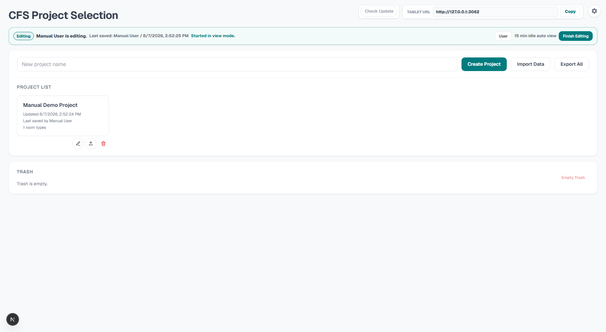
1 2 3 4 5 6 7| No | 名称 | 機能 | 注意点 |
|---|---|---|---|
| 1 | CFS Project Selection | プロジェクト一覧画面のタイトルです。 | ログイン直後にプロジェクトがない場合は、権限またはログイン状態を確認します。 |
| 2 | Check Update / Tablet URL | Git管理版の更新確認、タブレットや別端末から開くURL表示、URLコピーを行います。 | Git管理Zipでは同梱PortableGitを使って更新確認できます。通常ZipはGit情報を持たないため更新対象外です。 |
| 3 | 編集ステータス | 現在のユーザー、編集権限、ロック状態、Finish Editingを確認します。 | Editできない場合は他ユーザーのロック、権限、ログイン状態を確認します。 |
| 4 | New project name | 新規プロジェクト名を入力します。 | Database版では権限がないと作成/編集できません。 |
| 5 | Create Project / Import Data / Export All | 新規作成、JSONインポート、全プロジェクトエクスポートを行います。 | インポート時は既存IDとの重複に注意します。 |
| 6 | Project List | プロジェクトを開きます。編集、エクスポート、削除の各アイコンもここにあります。 | 削除したプロジェクトはTrashへ移動します。 |
| 7 | 設定アイコン | アプリ全体の設定画面を開きます。 | 端末側の表示設定やデバイス設定の確認に使います。 |
共通ヘッダーとRevision
1
2
3
4
5
6
7
8
| No | 名称 | 機能 | 操作の考え方 |
|---|---|---|---|
| 1 | View Only / Editing / Edit / Finish | 表示専用と編集状態を切り替えます。Database版では編集ロックを取得してから編集します。 | 複数人運用では、作業後にFinishしてロックを解放します。 |
| 2 | Undo / Redo | 現在の編集セッション内の変更を戻す、やり直す操作です。 | 保存済みRevisionを戻す操作ではありません。 |
| 3 | Revision表示 / Draft表示 | 選択RoomTypeの現在RevisionとDraft保存状態を表示します。 | RevisionはRoomType単位で履歴管理されます。 |
| 4 | Save Revision / Revision Management / Highlight Updates | Revision保存、履歴確認、差分ハイライト切替を行います。 | Save Revisionは全RoomType一括保存ダイアログで対象を選択できます。 |
| 5 | 右上アイコン | 表示補助メニューとアプリ設定を開きます。 | 歯車はアプリ設定、三本線は補助メニューです。 |
| 6 | Back to Project List | プロジェクト一覧へ戻ります。 | 未保存の編集がある場合は先にRevision保存を検討します。 |
| 7 | Area / Fixture / Room Type | マスター設定、器具マスター、RoomType作業エリアを切り替えます。 | CFS作成はRoom Type内の各サブタブを使います。 |
| 8 | PDUからCFSまでのサブタブ | RoomTypeごとの回路、機器、Scene、Switch、Command、Backlight、CFSを編集します。 | 左から登録していくとCFS出力の不足を減らせます。 |
Area / Fixture
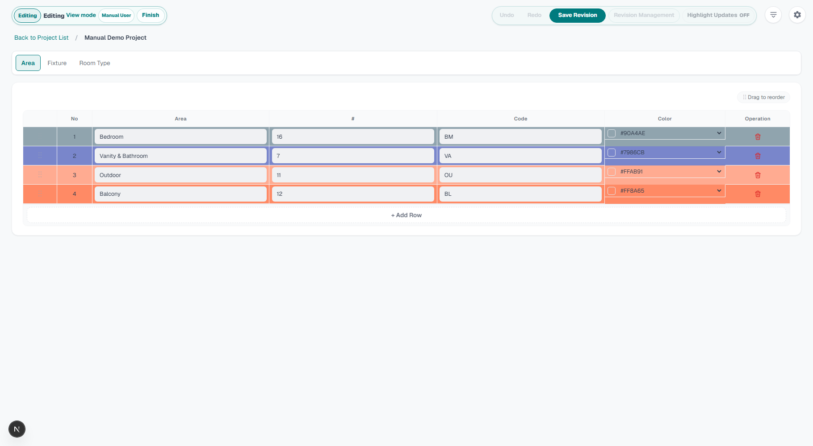
1 2 3 4 5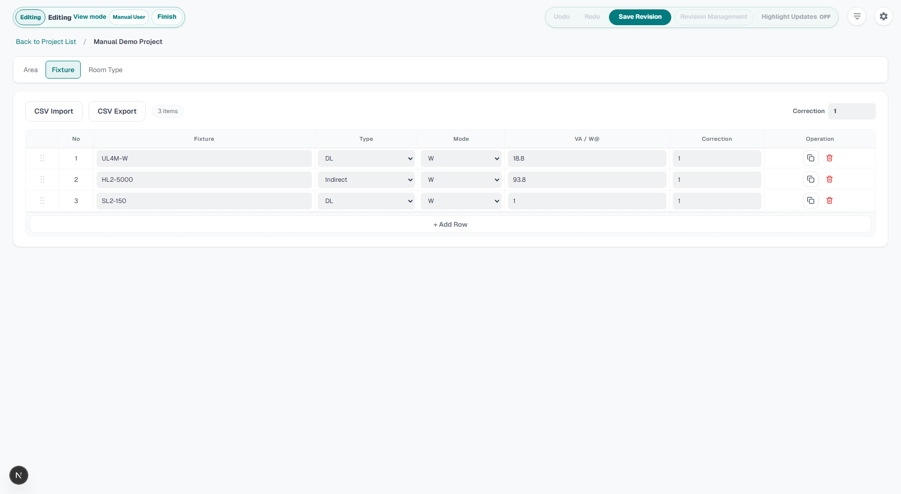
1 2 3 4 5| No | Areaタブ | Fixtureタブ |
|---|---|---|
| 1 | Areaタブを選択します。 | Fixtureタブを選択します。 |
| 2 | Area名、番号、Code、色を編集します。 | CSV Import / CSV Exportで器具マスターを入出力します。 |
| 3 | 色はCFSや表示の識別に使います。 | Correctionは器具の補正係数として使います。 |
| 4 | 削除アイコンでAreaを削除します。既存回路参照に注意します。 | Type、Mode、VA/W値を設定します。 |
| 5 | Add RowでAreaを追加します。順番はCFSのAreaソート順にも使われます。 | Add Rowで器具を追加します。 |
Room Typeと各サブタブ
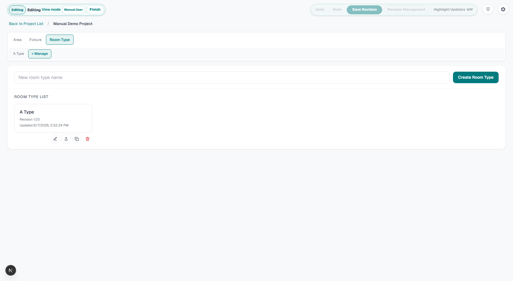
1 2 3 4| No | 名称 | 機能 |
|---|---|---|
| 1 | Room Typeタブ | RoomType単位の設定画面へ移動します。 |
| 2 | + Manage | RoomTypeの作成、一覧、複製、削除を行う管理表示です。 |
| 3 | New room type name / Create Room Type | RoomType名を入力し、新しいRoomTypeを作成します。 |
| 4 | Room Typeカードと操作アイコン | カード選択で開く、鉛筆で名称変更、複製、削除などを行います。 |
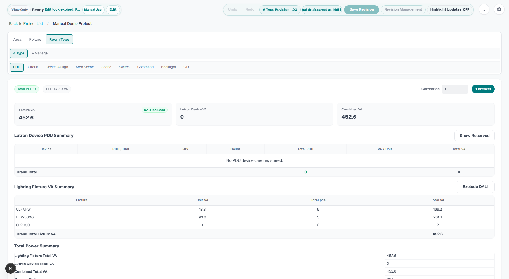
1 2 3 4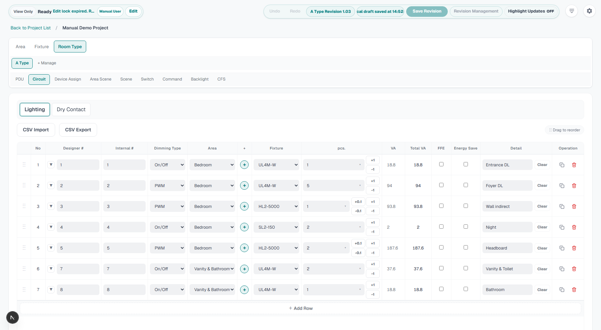
1 2 3 4| 画面 | ボタン/列 | 機能 |
|---|---|---|
| PDU | Device / Count / PDU | RoomTypeで使うデバイス数量とPDU消費を管理します。 |
| PDU | Add Device | デバイス行を追加します。Device AssignやSwitch登録の入口として使います。 |
| Circuit | Lighting / Dry Contact | 照明回路とCCOなどの接点回路の登録を切り替えます。 |
| Circuit | CSV Import / CSV Export | 回路表をCSVで取り込み/書き出しします。 |
| Circuit | Designer # / Internal # / Dimming Type / Area / Fixture / pcs. / Detail | CFSのBase列と計算に使う主要情報です。4P20系はCFS上PWMとして扱います。 |
| Circuit | コピー / 削除 | 行の複製、削除を行います。通し番号は表示順に自動で振り直されます。 |
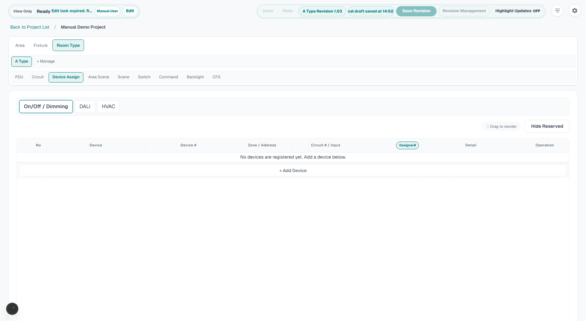
1 2 3 4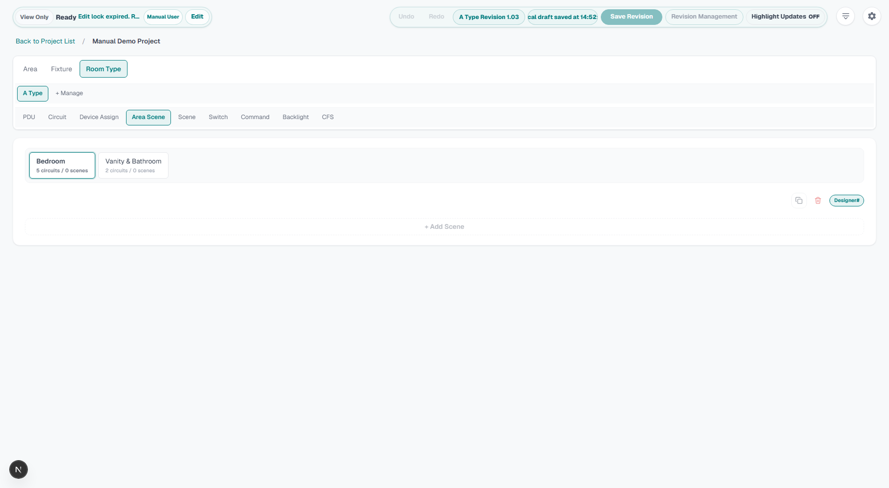
1 2 3 4| 画面 | ボタン/列 | 機能 |
|---|---|---|
| Device Assign | On/Off / Dimming、DALI、HVAC | 機器種別別に割り当て行を切り替えます。 |
| Device Assign | Show Reserved / Hide Reserved | Reserved行を表示/非表示にします。非表示時も列は左詰めせず、上詰めで表示します。 |
| Device Assign | Circuit # / Input | LightingはCircuit番号、CCIは入力起点、CCOはDry Contactリストまたは自由入力を選択します。 |
| Device Assign | Detail | Circuit # / Inputが空の場合は入力しない運用です。CCOではCircuitがある場合、CFS上でDetail空欄時にCircuitを表示します。 |
| Area Scene | Areaカード | AreaごとのSceneを切り替えます。 |
| Area Scene | Add Scene | Area Sceneを追加します。Refresh、Relax、NightなどRoomType共通で使うSceneを登録します。 |
| Area Scene | 設定セル | 各CircuitにOn/Off、%値、Raise/Lowerなどを設定します。カーテンOpen/CloseはSingle動作として扱います。 |
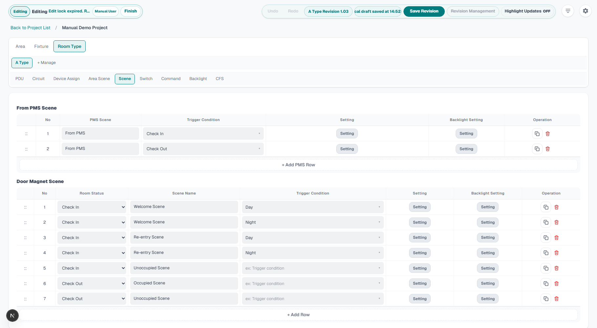
1 2 3 4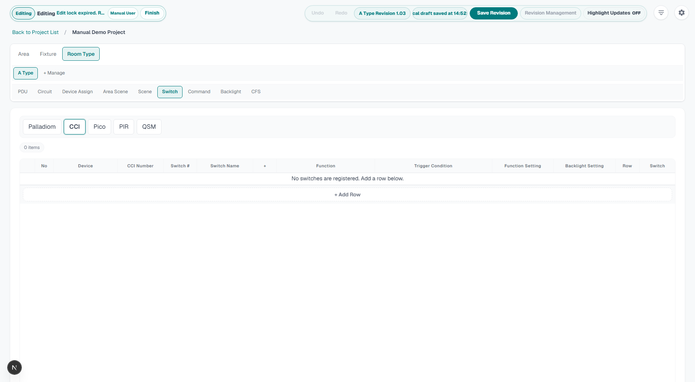
1 2 3 4| 画面 | ボタン/列 | 機能 |
|---|---|---|
| Scene | From PMS Scene | From PMS、Check-in/Check-out、PMS VAR: EnableのようなPMS連動列を登録します。 |
| Scene | Door Magnet Scene | ドアマグネットなどを起点にしたWelcome Sceneなどを登録します。 |
| Scene | Setting / Backlight Setting | Sceneの照明値、Area Scene参照、Backlight条件を設定します。 |
| Switch | Palladiom / CCI / Pico / PIR / QSM | スイッチ種別を切り替えます。CCIは動作の起点であり、CFSのBase列には通常表示しません。 |
| Switch | Switch # / Name / Button / Trigger Condition | スイッチ番号、名称、ボタン、起動条件を設定します。 |
| Switch | Setting | Area Scene呼び出し、直接%値、On/Offなどを設定します。Refresh/Relax/NightはBedroomのArea Sceneとして呼ぶ運用です。 |
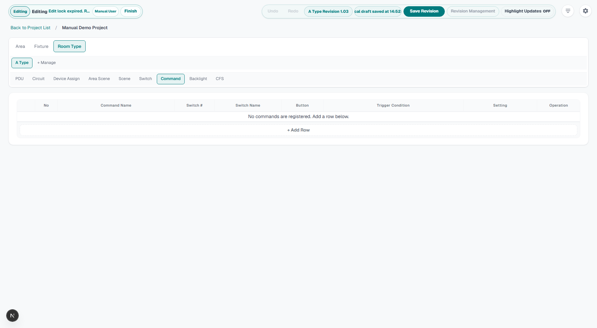
1 2 3 4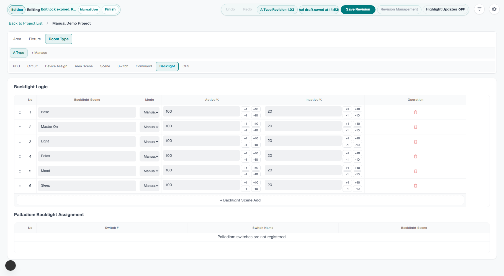
1 2 3 4| 画面 | ボタン/列 | 機能 |
|---|---|---|
| Command | Command Name | CFS上のCommand列名になります。 |
| Command | Switch # / Switch Name / Button | コマンドを起動するスイッチ情報を登録します。 |
| Command | Trigger Condition | Hold 4sec.などの起動条件を設定します。 |
| Command | Setting | 対象回路やSceneに対する値を設定します。 |
| Backlight | Target / Condition / Level | Backlight LogicとしてCFSへ出す条件と値を登録します。 |
CFSタブと表示設定
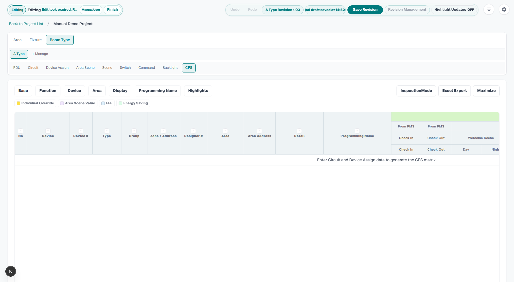
1 2 3 4 5 6 7| No | 名称 | 機能 |
|---|---|---|
| 1 | Base / Function / Device / Area / Display / Programming Name / Highlights | CFS表の列、並び、フィルター、名称生成、差分表示を設定します。 |
| 2 | ハイライト凡例 | Individual Override、Area Scene Value、FFE、Energy Savingなどの色意味を示します。 |
| 3 | InspectionMode | CFS表上で値を確認・一時編集するモードに入ります。 |
| 4 | Excel Export | 現在表示中のCFSをExcel形式で出力します。 |
| 5 | Maximize | CFS表を最大化表示します。 |
| 6 | Base列ヘッダー | No、Device、Device#、Type、Zone/Address、Designer#、Area、Detailなどを表示します。 |
| 7 | CFSマトリクス | Circuit、Device Assign、Scene、Switch、Command、Backlightから解決された値を表示します。 |
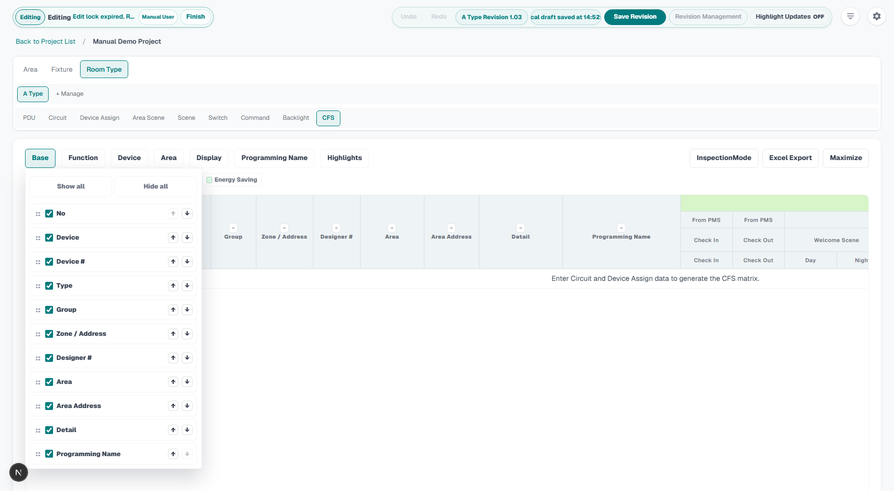
1 2 3 4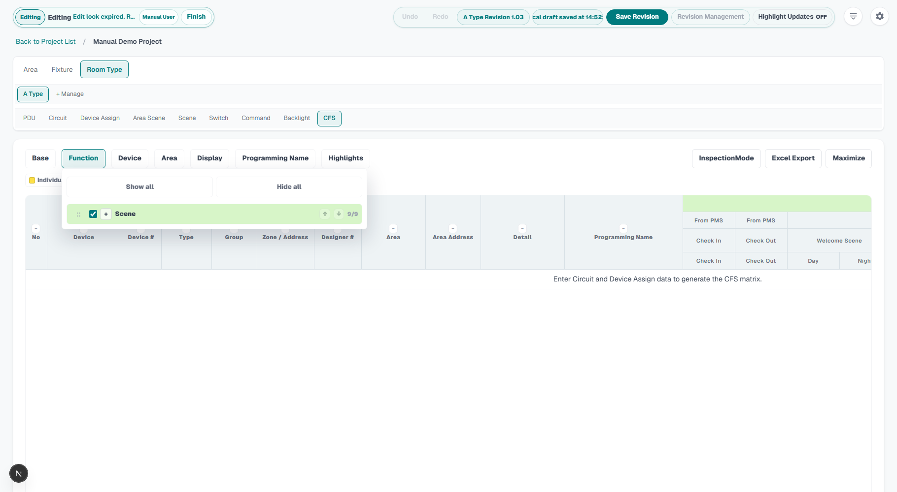
1 2 3| メニュー | ボタン/項目 | 機能 |
|---|---|---|
| Base | Show all / Hide all | Base列をまとめて表示/非表示にします。非表示にした列は表上部に小さく残さず、再表示はBaseメニューから行います。 |
| Base | チェックボックス | 列単位で表示/非表示を切り替えます。 |
| Base | 上下ボタン | 列の表示順を移動します。 |
| Function | Show all / Hide all | 機能列をまとめて表示/非表示にします。 |
| Function | グループ行 | Scene、Command、Switchなどの列グループ単位で表示を管理します。 |
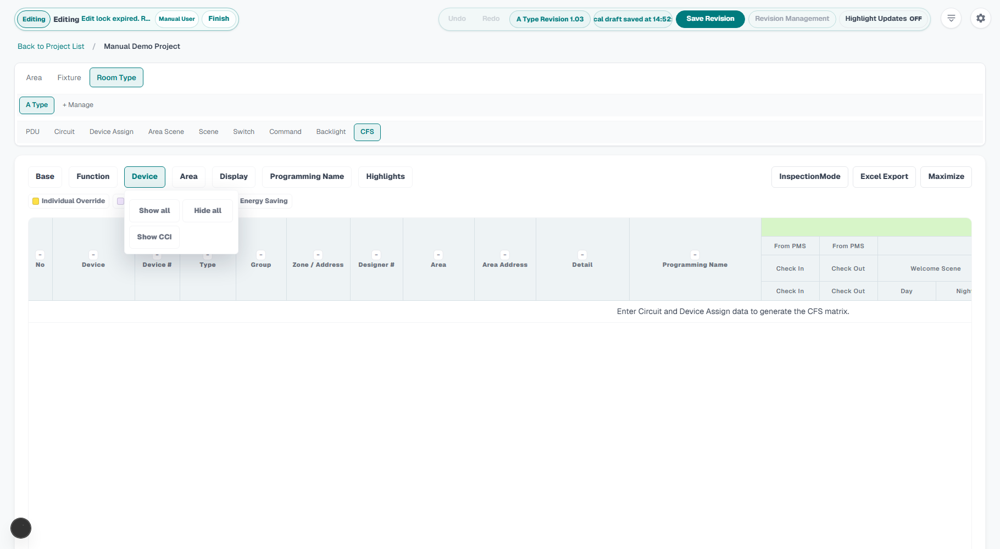
1 2 3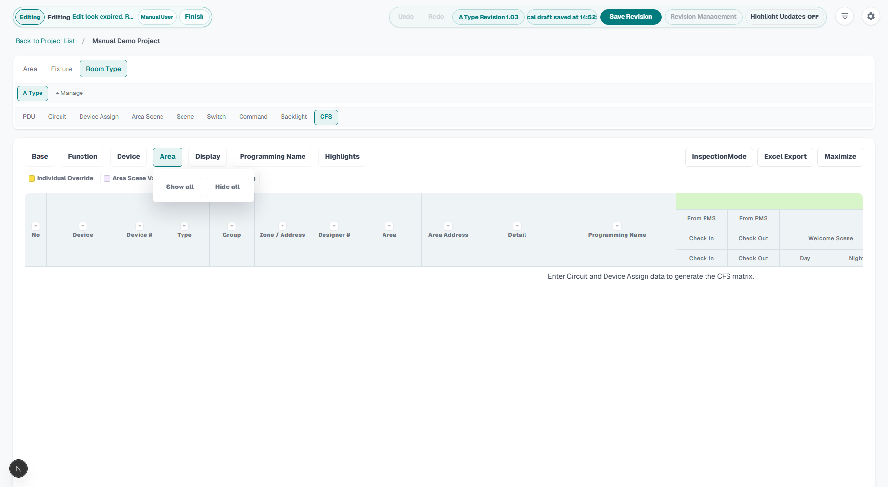
1 2 3| メニュー | ボタン/項目 | 機能 |
|---|---|---|
| Device | Show all / Hide all / Show CCI | 機器ごとの表示切替とCCI行の表示/非表示を行います。CCI表示時もCircuitとDetailを確認できます。 |
| Device | 機器チェック | QSN、QSE-IOなど機器単位でCFS行を絞り込みます。 |
| Area | Show all / Hide all | Areaフィルターを一括操作します。 |
| Area | Areaチェック | Areaごとに表示を絞ります。CCOなど非照明行は照明ソート範囲から外し、Device順のまま下に表示します。 |
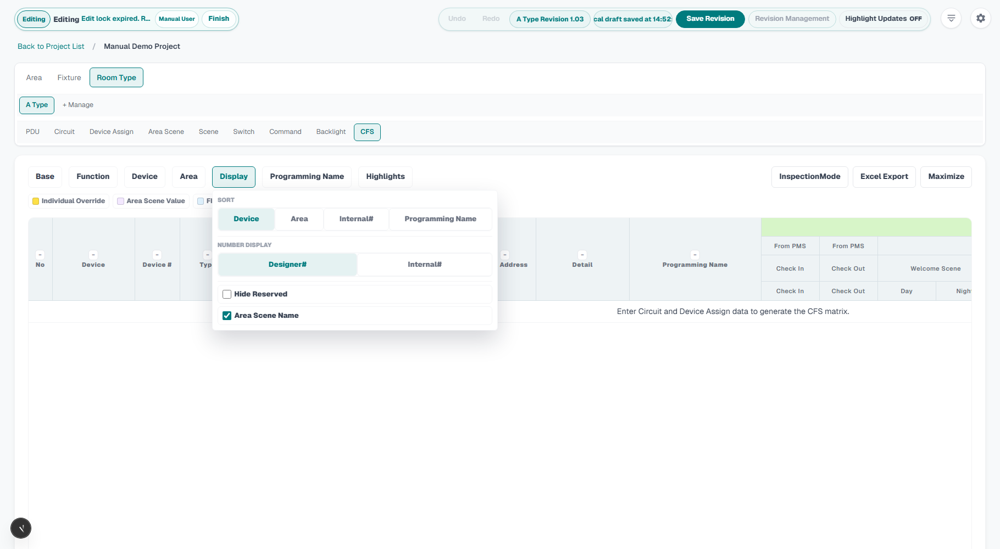
1 2 3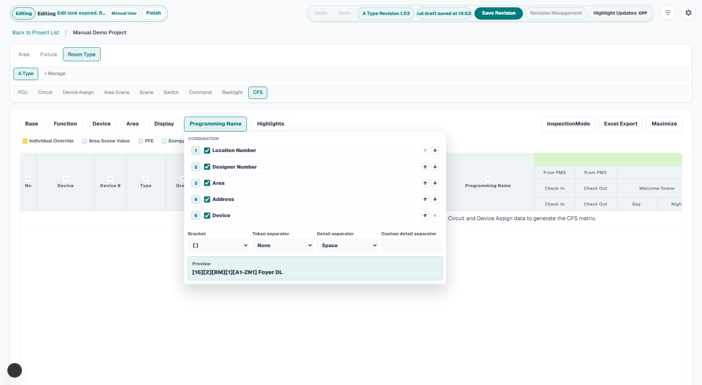
1 2 3 4| メニュー | ボタン/項目 | 機能 |
|---|---|---|
| Display | Device / Area / Internal# / Programming Name | CFS行のソート基準を選択します。Area選択時はAreaタブ順に並びます。 |
| Display | Designer# / Internal# | CFSの番号表示基準を切り替えます。 |
| Display | Hide Reserved / Area Scene Name | Reserved行、Area Scene名の表示を切り替えます。 |
| Programming Name | Combination | Location Number、Designer Number、Area、Address、Deviceを縦一列で選び、上下ボタンで順番を変えます。 |
| Programming Name | Bracket / Token separator / Detail separator | 括弧種類、各要素の区切り、Detailとの区切りを選択します。 |
| Programming Name | Preview | 現在の設定で生成されるProgramming Nameを確認します。 |
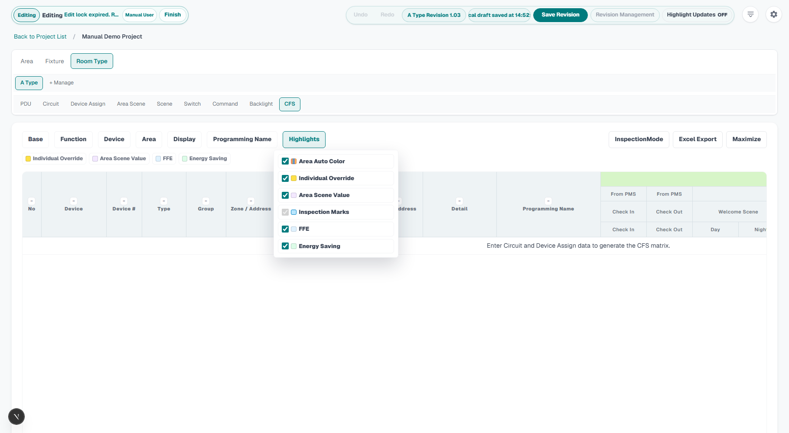
1 2 3| No | 項目 | 機能 |
|---|---|---|
| 1 | Individual Override | Area Scene参照ではなく個別上書きされた値を強調します。 |
| 2 | Area Scene Value | Area Sceneから来ている値を強調します。 |
| 3 | FFE / Energy Saving | FFE対象、Energy Saving対象のCircuitを強調します。 |
InspectionMode
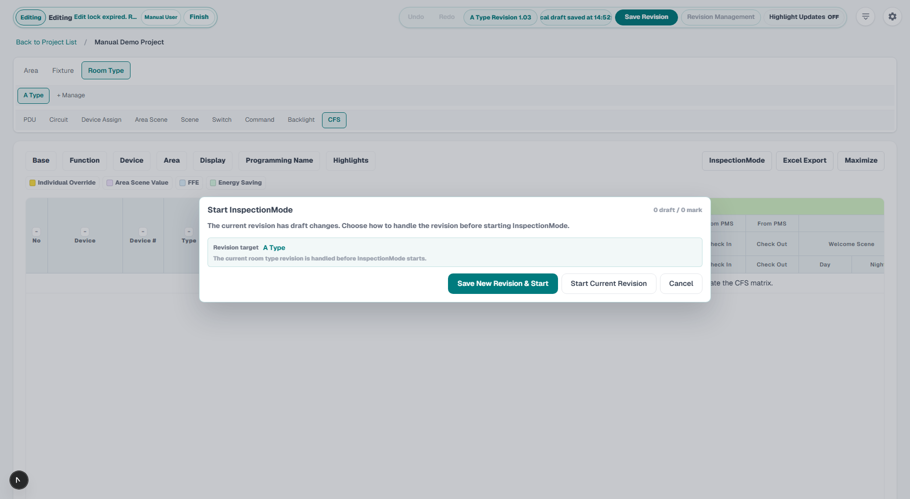
1 2 3
1
2
3
4
| No | 名称 | 機能 | 保存動作 |
|---|---|---|---|
| 1 | InspectionModeボタン | 点検モードの開始/終了を行います。 | 終了時に複数RoomTypeで編集がある場合は対象を一覧で選び、まとめて保存できます。 |
| 2 | Linked / Unlink、Select / Copy / Paste / Clear / Revert | Area Scene連動を維持するか、個別上書きにするかを選び、範囲編集を行います。 | LinkedはArea Sceneへ、Unlinkは直接値/上書きへ反映します。 |
| 3 | CFSセル選択 | セルまたは範囲を選んで値を編集します。 | 編集済みセルはInspectionのドラフトとして保持されます。 |
| 4 | 0% / 100% / -10 / -1 / +1 / +10 / Raise / Lower / Uneffected | 調光値や標準動作を素早く入力します。 | 0%と100%は即座に値入力欄へ反映されます。 |
複数RoomTypeでInspection編集した場合は、終了時に編集されたRoomTypeを一覧表示し、チェックしたRoomTypeだけRevision保存する運用が推奨です。現在選択中のRoomTypeだけを無言で保存する形にはしません。
トラブル対応
| 症状 | 確認する場所 | 対応 |
|---|---|---|
| 起動しない、96%付近で止まる | artifacts\startup\latest-status.txt、最新の start-*.log、server-*.log | ポート使用中、ビルド失敗、依存関係取得失敗を確認します。必要に応じて別ポートで起動します。 |
| 新しいZipを入れたのに画面が古い | デスクトップ/スタートメニューの CFS App ショートカット、/api/app-update/status の appDir | 古いショートカットは以前の解凍フォルダを指し続けます。古いショートカットを削除し、新しい解凍フォルダの CREATE_DESKTOP_SHORTCUT.vbs で作り直します。 |
| ログイン後にプロジェクトがない | Microsoftログイン状態、管理者登録、Database接続 | ログインし直し、管理者にメール登録を確認します。ブラウザの認証トークンが古い場合は再ログインします。 |
| Failed to save locallyと出る | ブラウザストレージ容量 | Database版ではDB保存が主ですが、ブラウザバックアップの容量が不足している可能性があります。不要プロジェクトや古いRevisionを整理します。 |
| Git was not foundが出る | .cfs-runtime\git、/api/app-update/status の gitPath | Git管理ZipではPortableGitを同梱します。古いZipや古いショートカットを使っていないか確認します。通常ZipはGit更新対象外です。 |
| Update Blockedが出る | Git管理された既存アプリの差分 | ローカルの追跡ファイル変更をコミットまたは破棄してから更新します。配布Zip版では通常Git更新の対象ではありません。 |
| CFSに行が出ない | Circuit、Device Assign | CFSはCircuitとDevice Assignの連携からBase行を作ります。Circuit # / InputやDetailが不足していないか確認します。 |
| CCOのArea/Detailが意図と違う | CircuitタブのDry Contact、Device AssignのCCO行 | Dry ContactでArea、Circuit、Detailを登録し、Device Assignではリストから選択します。Detail空欄時はCFS上でCircuitを表示します。 |
| ハイライトが広く出る | Highlight Updates、Revision履歴 | 差分表示はセル単位が基本です。行追加時のみ行単位で強調されます。最新Revisionを保存して比較元を整えます。 |